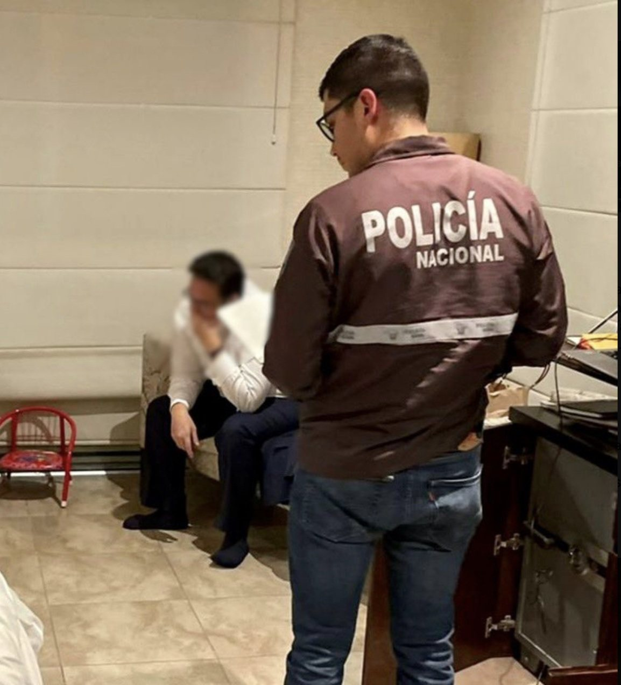

24 oct 2022 · ¿El ministro Xavier Vera es corrupto?
Xavier Vera Grunauer duró seis meses como ministro de Energía de Guillermo Lasso. En octubre de 2022 La Posta publicó un descuento por discapacidad en sus planillas de luz, un mensaje de amenaza que exigía cumplir un compromiso de 150.000 dólares, el audio del gerente de Petroecuador diciendo que el ministro vendía puestos, y la voz de un hombre que asegura haberle entregado ese dinero en sus manos por una coordinación zonal. Cuatro días después la Fiscalía allanó su casa. Al quinto, renunció.

Xavier Vera Grunauer, ingeniero guayaquileño, llegó al Ministerio de Energía y Minas el 28 de abril de 2022. Había sido viceministro y, según la reconstrucción de La Posta, se cambió de bando dentro del Gobierno hacia el círculo de Fabián Pozo y Marcos Miranda, los chicos de la Presidencia, que también lograron poner a Hugo Aguiar como gerente de Petroecuador cuando salió Ítalo Cedeño, el hombre de Danilo Carrera y Rubén Cherres. Fernando Villavicencio, desde la Comisión de Fiscalización, ya lo había señalado por conflicto de interés: su empresa familiar, Consultora Vera y Asociados, fiscalizó la hidroeléctrica Coca Codo Sinclair. Vera dijo que dejó la empresa el 11 de mayo de 2011, un mes antes del contrato.

El caso empezó por un mensaje. Alguien se lo había enviado al teléfono del ministro y llegó a la redacción: Xavier Vera, hasta ahora espero que me cumplas el compromiso. Sacaste a nuestro hombre, te burlaste de nosotros aun habiéndote pagado más de 150 mil dólares y sigues como si nada. Acuérdate que las deudas se pagan y tienes una bella hija. Un ministro amenazado es una víctima; la pregunta era por qué le cobraban. El jueves 20 y el viernes 21 de octubre La Posta publicó lo primero: planillas de Cnel que mostraban un descuento por discapacidad en la cuenta de luz del ministro, que él negaba tener carnet.
Te burlaste de nosotros aun habiéndote pagado más de 150 mil dólares y sigues como si nada. Acuérdate que las deudas se pagan y tienes una bella hija.
Mensaje enviado al teléfono del ministro, mostrado por La Posta el 24 de octubre de 2022

Tres cosas coincidieron en una semana. El miércoles, en el caso Danubio, Doménica Vivanco había mostrado que Juan José Pons decía que había que reunirse con Vera para cobrar esos quince. El gerente de Petroecuador lo nombraba. Y el mensaje. El fin de semana Boscán y Mónica Velásquez se reunieron con casi todo el círculo del ministro. Su propia gente lo entregó.
El lunes 24 de octubre de 2022 Café la Posta dedicó el programa entero a Vera. Primero, un audio: alguien cercano al ministro llama a un periodista de la redacción para llegar a un acuerdo y frenar la publicación del lunes; el ministro, dijeron las fuentes, estaba dispuesto a pagar 150.000 dólares por el silencio. Segundo, el círculo: la esposa a la que llaman la ministra, Alan Velasco el carnicero, Armando Robalino el Chavo, Luis Sarmiento el sabueso. Tercero, un documento reservado del equipo del ministro sobre una licitación de Petroecuador de 150 millones dividida en cuatro clusters, con notas sobre qué empresa china quería cuáles y cuál no; y el cambiazo de un cargamento de material minero incautado en Ibarra por ripio.
Esposa del ministro. Según el entorno, con mucha influencia sobre él
Organizaba las gestiones. Reemplazó a Santiago Anda como asesor. Murió en mayo de 2026
Ejecutaba lo que Velasco organizaba: iba en nombre del ministro
Abogado del círculo
Parte del entorno
Asesor del ministro pese a su vínculo con importadoras de combustible
Cuarto, la voz de Ítalo Cedeño, hasta hacía poco gerente de Petroecuador con rango de ministro: a mí me pidió dos o tres puestos de gente que me ofrecía plata, millones de dólares por un puesto; el que paga para entrar, ¿cuánto querrá robarse? Cedeño después dijo que él no había dicho eso; La Posta lo reprodujo. Y quinto, el audio central: Fabián Zamora, abogado, cuenta con nombre y apellido que le entregó en sus manos a Xavier Vera más de 150.000 dólares por la coordinación zonal de Imbabura de la Agencia de Regulación y Control de Energía, que después le cambiaron por la de Azuay, y que al final Alan Velasco se sentó y todo cambió.
El martes 25 Vera compareció ante la Comisión de Transparencia de la Asamblea, presidida por Ferdinan Álvarez. Negó haber pedido dinero, dijo que alertó a Cedeño sobre ofertas sospechosas y que los audios estaban orquestados por mafias. El jueves 27 de octubre la Fiscalía allanó su casa en Guayaquil, su departamento en Cumbayá y su despacho en el ministerio, e incautó celulares, una laptop, una tableta y documentos. El viernes 28 renunció para defenderse de lo que llamó calumnias. Lasso aceptó. Fue el primer exministro de ese Gobierno con la Justicia encima.
La investigación previa por cohecho tardó siete meses. El 15 de mayo de 2023 Vera fue detenido en la Fiscalía de La Merced, en Guayaquil, para garantizar que compareciera a la formulación de cargos, y trasladado a Quito; la instrucción arrancó el 16 de mayo con la fiscal general Diana Salazar. El 10 de enero de 2024 fue llamado a juicio junto a Adrián Zamora, Armando Robalino y Alan Velasco, acusados como autores y cómplices: la Fiscalía sostenía que Zamora pagó 150.000 dólares por el cargo de coordinador zonal en la agencia de energía. La audiencia se difirió tres veces. La Fiscalía pidió siete años.
La Asamblea reaccionó al día siguiente de la publicación. Fernando Villavicencio, presidente de la Comisión de Fiscalización, anunció junto a los asambleístas Ricardo Vanegas y Sofía Sánchez la elaboración de un pedido de juicio político contra el ministro. Vera renunció antes de que prosperara.
El juicio se instaló en 2026 ante los jueces Manuel Cabrera, Daniella Camacho y Hernán Barros de la Corte Nacional. Deliberaron desde el 21 de abril. El 25 de junio de 2026 declararon inocentes a Vera, Zamora y Robalino: no se acreditó la materialidad del delito porque no se probó, más allá de duda razonable, la entrega de los 150.000 dólares. La acción contra Velasco se extinguió por su muerte en mayo. El tribunal reconoció irregularidades, audios sobre gestión de cargos e inconsistencias patrimoniales, y ordenó enviar copias a la Fiscalía para evaluar otros delitos. Expreso reportó el 27 de junio que la Corte ratificó la inocencia.
El caso dejó una lección sobre la prueba: el audio de un hombre que dice que pagó no basta si no aparece el dinero. Y otra sobre el ministerio: en menos de un año, dos exministros de Energía fueron investigados penalmente y un tercero enfrentó juicio político. Vera Grunauer volvió a la actividad privada.
Actualizado el 5 de septiembre de 2026
Vera asume Energía y Minas.
La amenaza por los 150.000 dólares llega a La Posta.
El descuento por discapacidad en la cuenta de luz.
El intento de compra, el círculo, Cedeño y el audio de Zamora.
Comparece ante la Comisión de Transparencia.
Guayaquil, Cumbayá y el ministerio.
Lasso la acepta.
Para la formulación de cargos por cohecho.
Con Zamora, Robalino y Velasco.
La Fiscalía pide siete años.
No se probó la entrega del dinero.
Ministro de Energía y Minas, abril a octubre de 2022.
Abogado. Su audio asegura que entregó más de 150.000 dólares al ministro.
Operador del círculo, según La Posta.
Asesor y organizador de las gestiones.
Gerente de Petroecuador. Su audio dice que Vera pedía puestos.
Secretario jurídico de la Presidencia. Cabeza de los chicos de la Presidencia.
Negó haber pedido dinero, dijo que alertó a Cedeño sobre ofertas sospechosas, calificó los audios de orquestados por mafias y los allanamientos de show mediático, y renunció para defenderse de calumnias.
Sostuvo que no dijo lo que se escucha en el audio.
No se acreditó la existencia de la dádiva. Reconoció irregularidades y ordenó copias a la Fiscalía por otros posibles delitos.


muertes violentas es uno de los fines de semana más violentos de los que se tiene registro solo en la provincia de guayas casi 30 asesinatos en un fin de semana 30 asesinatos el barbarico el ministro de energía Javier Vera está metido en problemas luego en la publicación de algunos audios y algunos documentos aquí en la posta el ministro ha sido llamado a la asamblea ese llamado Yo también por eso no estaría en el pr…
Leer la transcripción completanacional Buen día la posta dice Henry García Saludos desde el páramo de imbabura Saludos queridos Henry ayer comparecí delante de la asamblea nacional la comparecencia que fue transmitida aquí en directo para la audiencia de la posta que básicamente recogía lo que hemos venido contando a lo largo de estos días y que agregaba algunos documentos que no se habían podido hacer públicos hasta el momento entre esos una fac…
Leer la transcripción completaayer allanado el Primer Ministro de Guillermo El Primer Ministro de Guillermo Lázaro Así que vamos a hablar más del tema del señor Javier Vera agronauer pero ya le damos la bienvenida hoy no está Anderson boscán Hoy está el chico del apartamento 52 bienvenido Cómo estás bienvenidos Yo soy el chico del departamento 512 es un gusto estar con ustedes me pueden contar como chicos departamento 512 arroba chicos el departa…
Leer la transcripción completanacional en el día de hoy vamos a estar hablando de varios temas sin duda lo más relevante lo que ocurrió el viernes en horas de la tarde ya cuando Cerramos el programa acá pero sin duda hay que hablarlo Pues nosotros tocamos esta investigación nosotros publicamos los audios que sucedieron en torno al Señor Javier Vera ex ministro de energía después de que gente cercana a él se acercó a intentar sobordarlos para deci…
Leer la transcripción completaTranscripciones de los subtítulos automáticos de cada programa. No están corregidas a mano: sirven para buscar una frase y llegar al minuto exacto del video, no como cita textual literal.
Del programa a la renuncia.
Absuelto. El tribunal pidió investigar el resto.
Tras la absolución, la justicia dispuso investigar otros delitos a partir de los audios y de la información publicada.
Los audios citados fueron reproducidos por La Posta el 24 de octubre de 2022. El tribunal que absolvió a los procesados en 2026 no dio por probada la entrega del dinero. Los videos son los programas originales, alojados en este sitio.